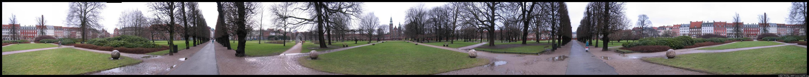

At the end of my walk East, I ended up in a royal garden with a royal castle. The castle houses the royal treasury, such as crowns, sceptors, etc.
A view from inside the park, toward the street.
A view just east of where my host mom once lived.
The main walkway through the park.

This is a 360 degree image (2 * pi for the nerds) of Rosenburg Castle and garden. Its made up of 12 images using "Stitch assist" on my digital camera. If you ever have the opportunity to use stitch assist, make sure you make low-overlap images --- mine weren't and this made it more of a headache later. Lets just say the final 11 + 1 stitch used 520 MB of ram. You can see the house where my host mom lived when she was little at the left edge of the picture. Second floor. Remeber, in Europe they number the ground floor zero (makes sense, doesn't it?).Pictures of the crown jewels can be seen from when my parents visited.
Adam can be reached at adam dot morley at gmail dot com